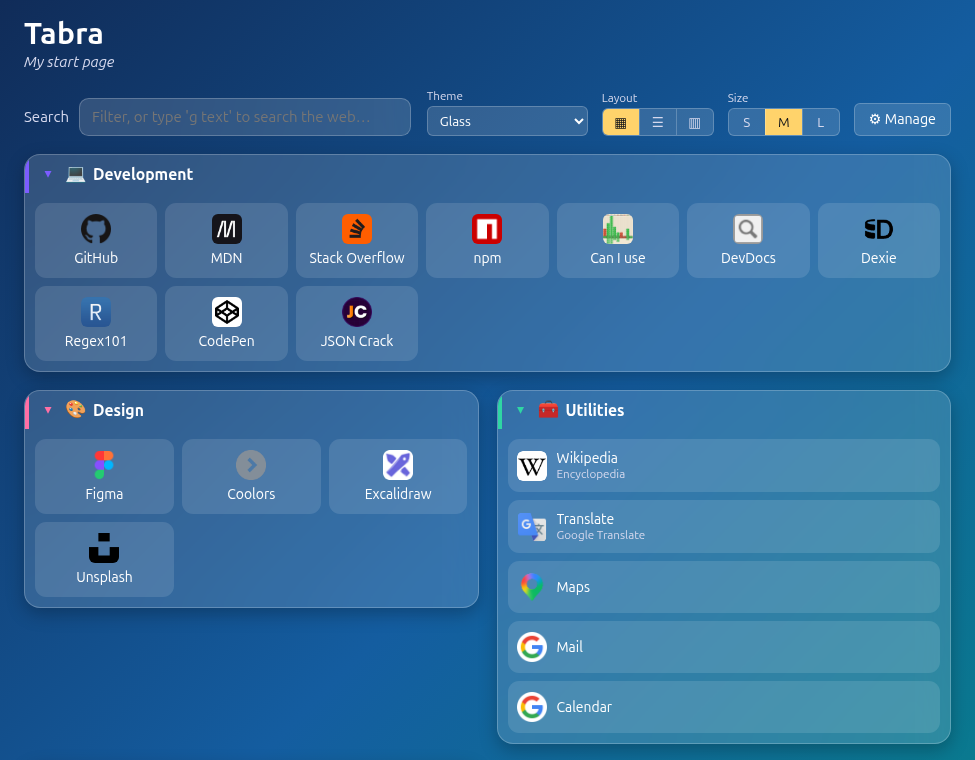
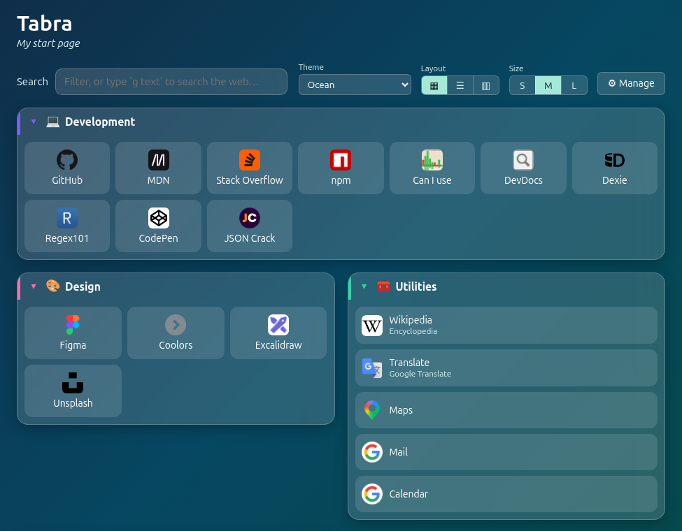
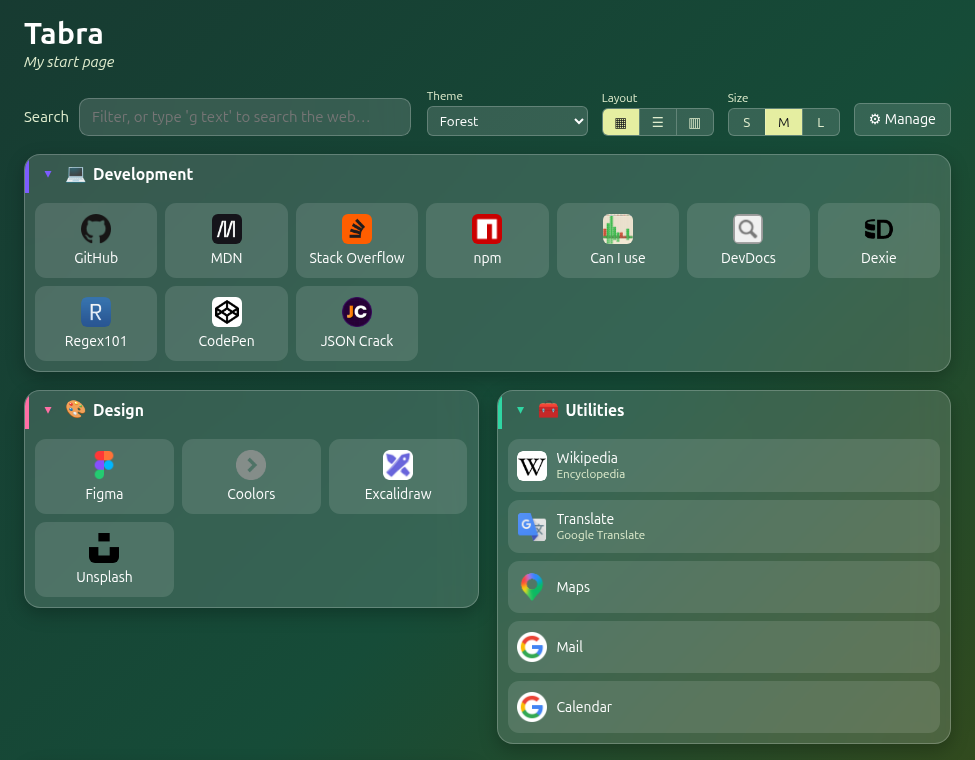
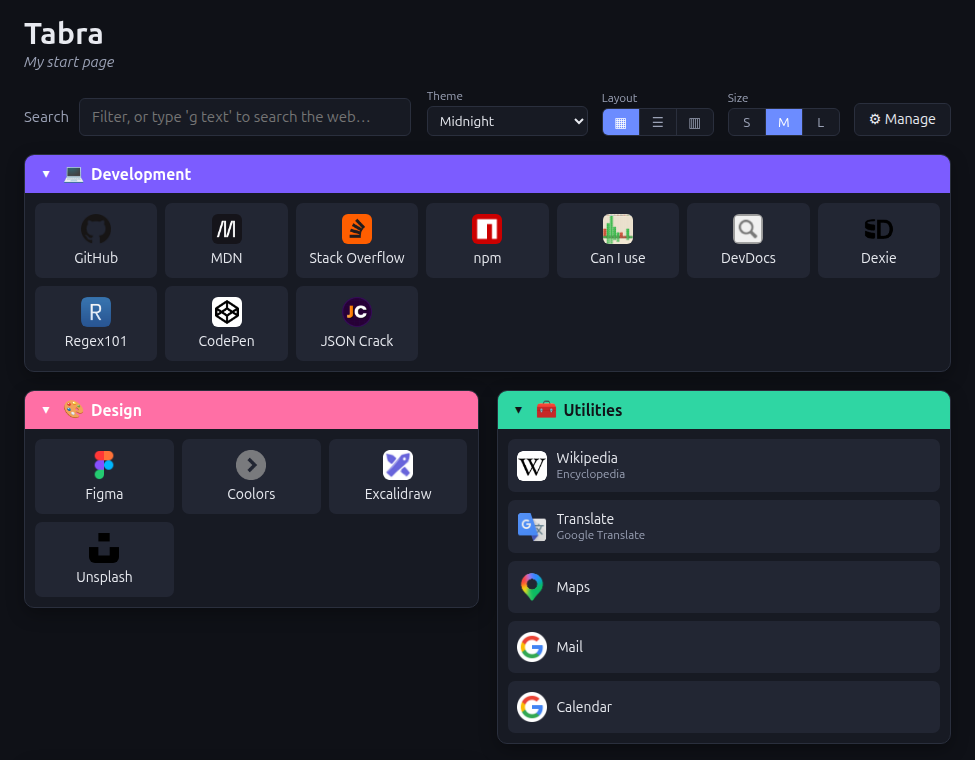
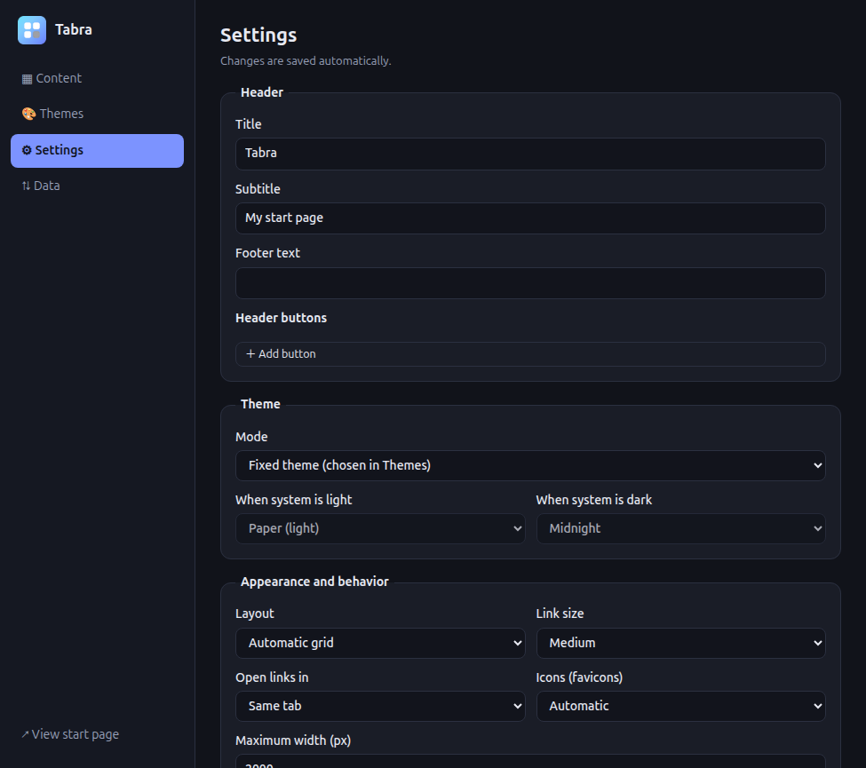

Find it fast
Filter links as you type or search directly with shortcuts like g query and yt query.
A more organized start
Your links, searches, and favorite tools in one place. Shape your space around the way you work, and find what you need without losing momentum.
20 themes·Multiple pages·Your data stays in your browser

Less searching. More focus.
Turn the blank tab into a useful space that fits the way you work.
Filter links as you type or search directly with shortcuts like g query and yt query.
Use the visual admin panel to add or edit links, organize pages and sections, and choose icons.
Your content and settings are stored in your browser. Export a JSON backup anytime; Tabra also creates one before each import or restore.
A space that feels like yours
Choose from 20 built-in themes or adjust colors, backgrounds, typography, link size, and shape.



Aero themes Glass, Ocean, Forest, and Sunset add a translucent finish.
Easy-to-use controls
The admin panel brings content management and appearance settings together, with changes saved automatically.

Ready in minutes
Tabra works in Chrome, Edge, and Brave. Load it once, and it will appear whenever you open a new tab.
Go to chrome://extensions and turn on Developer mode.
Select “Load unpacked” and choose the project folder.
Organize your shortcuts and choose a theme you like.